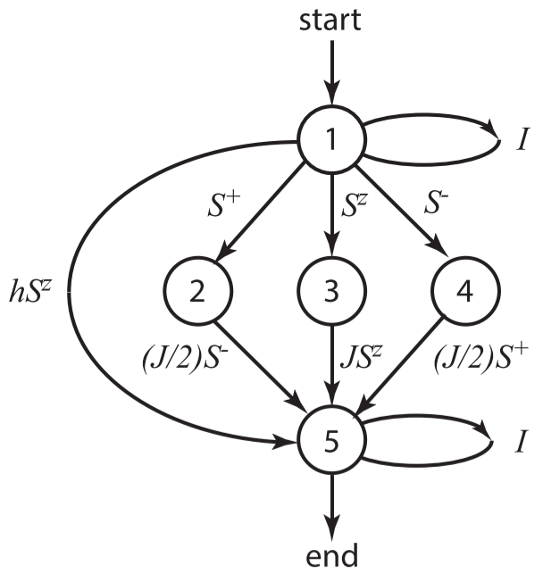

DMRG附录：用“自动机”来计算MPO
在这一小节中，我们讨论如何从 Hamiltonian 出发，得到其对应的MPO表示。本文所使用的方法，是借助于“自动机”的一种方法。首先，我们考虑一个简单的 Heisenberg 自旋模型：
\[ \hat{H}=J \sum_{i=1}^{L-1}\left(\frac{1}{2}\left(\hat{S}_i^{+} \hat{S}_{i+1}^{-}+\hat{S}_i^{-} \hat{S}_{i+1}^{+}\right)+\hat{S}_i^z \hat{S}_{i+1}^z\right)+h \sum_{i=1}^L \hat{S}_i^z \] 我们以第一项为例，当 \(i\) 不在边界上的时候，其中任何一项都可以写成下面的这种形式： \[ \hat{I} \otimes \hat{I} \otimes \hat{S}^{+} \otimes \hat{S}^{-} \otimes \hat{I} \otimes \hat{I} \ldots . \] 让我们想象一个自动机，他从这条链的右端出发，然后一直移动到左端。这个自动机有如下几种内部状态：\(1(\hat{I})\), \(2(\hat{S}^-)\), \(4(\hat{S}^+)\). 注意 \(1\) 代表链条右边的 \(\hat{I}\)，链条左边的 \(\hat{I}\) 我们用状态 \(5\) 来表示。如下图所示，当我们从状态 \(1\) 转换到状态 \(1\) 的时候，中间会经过一个 \(\hat{I}\). 而从状态 \(1\) 转换到状态 \(4\) 的时候，中间需要经过一个 \(\hat{S}^-\). 而从状态 \(2\) 转换到状态 \(5\) 的时候，中间会经过一个 \(J/2\hat{S}^-\). 
其他的项都是类似的，我们在上图中画出了所有可能的状态、和状态转移的方式。比如磁场项 \(h\hat{S}^z\) 可以实现状态从 \(1\) 到 \(5\) 的转变。任何一项，我们总是以状态 \(1\) 开始，然后到状态 \(5\) 而结束。然后根据这张状态转移图，我们就可以写出 Hamiltonian 的 MPO 表示了，分别用状态1,2,3,4,5作为矩阵的行和列，状态转移时所经过的算符作为矩阵元素的值，则可以写出MPO矩阵： \[ \hat{M}^{[i]}=\left[\begin{array}{ccccc} \hat{I} & 0 & 0 & 0 & 0 \\ \hat{S}^{+} & 0 & 0 & 0 & 0 \\ \hat{S}^z & 0 & 0 & 0 & 0 \\ \hat{S}^{-} & 0 & 0 & 0 & 0 \\ h \hat{S}^z & (J / 2) \hat{S}^{-} & J^z \hat{S}^z & (J / 2) \hat{S}^{+} & \hat{I} \end{array}\right] \] 对于边界上的格点来说，比如右边界的 \(L\) 格点，他的右边没有其他的格点了，因此可以看作是从 \(1(\hat{I})\) 出发，然后转移到其他所有可能的状态。格点 \(1\) 也是同理的，所以我们可以得到边界上的 MPO 为 \[ \hat{M}^{[1]}=\left[\begin{array}{lllll} h \hat{S}^z & (J / 2) \hat{S}^{-} & J^z \hat{S}^z & (J / 2) \hat{S}^{+} & \hat{I} \end{array}\right] \quad \hat{M}^{[L]}=\left[\begin{array}{c} \hat{I} \\ \hat{S}^{+} \\ \hat{S}^z \\ \hat{S}^{-} \\ h \hat{S}^z \end{array}\right] \]